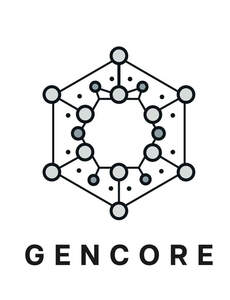

Trade Mark Journal No.2025/028 11 July 2025
UK00004210949 29 May 2025 (1,5,9,10,16,24,25,26,30,35,40,42,44,45)

- Class 1
- Vitamins for use in the manufacture of food supplements; Chemical supplements for use in the manufacture of vitamins; Antioxidants for use in the manufacture of food supplements; Proteins for use in the manufacture of food supplements; Chelated substances for use as supplements for plant foliage; Calcium-based algae nutrient supplements for use in aquaria.
- Class 5
- Vitamin supplements; Dietary supplements; Nutritional supplements; Herbal supplements; Probiotic supplements; Homeopathic supplements; Chlorella dietary supplements; Flaxseed dietary supplements; Calcium supplements; Anti-oxidant supplements; Colostrum supplements; Protein supplements; Dietary supplements consisting of vitamins; Prebiotic supplements; Lecithin dietary supplements; Food supplements; Mineral dietary supplements; Zinc dietary supplements; Mineral nutritional supplements; Propolis dietary supplements; Acai powder dietary supplements; Nutraceuticals for use as a dietary supplement; Dietary and nutritional supplements; Liquid dietary supplements; Vitamin supplements for animals; Liquid nutritional supplements; Linseed dietary supplements; Protein dietary supplements; Vitamin and mineral supplements; Liquid vitamin supplements; Yeast dietary supplements; Casein dietary supplements; Enzyme dietary supplements; Dietary supplements for animals; Dietary supplements for pets; Anti-oxidant food supplements; Dietary food supplements; Alginate dietary supplements; Albumin dietary supplements; Flaxseed oil dietary supplements; Liquid herbal supplements; Wheat dietary supplements; Vitamin and mineral supplements for pets; Dietary supplements for humans; Dietary supplements for infants; Pollen dietary supplements; Glucose dietary supplements; Protein powder dietary supplements; Vitamin and mineral food supplements; Dietary supplements in powder form; Mineral dietary supplements for animals; Dietary supplements with a cosmetic effect; Nutritional supplements for veterinary use; Dietary supplements for medical use; Medicated food supplements; Mineral dietary supplements for humans; Whey protein dietary supplements; Food supplements for sportsmen; Nutritional supplements consisting primarily of magnesium; Dietary supplements consisting primarily of magnesium; Protein supplements for animals; Soy protein dietary supplements; Vitamin supplement patches; Health-aid foods supplements containing ginseng; Health food supplements made principally of vitamins; Vitamin preparations in the nature of food supplements; Soy isoflavone dietary supplements; Dietary supplement drinks; Dietary supplements and dietetic preparations; Linseed oil dietary supplements; Nutritional supplements consisting of fungal extracts; Nutritional supplements consisting primarily of calcium; Folic acid dietary supplements; Brewer's yeast dietary supplements; Dietary supplements consisting primarily of calcium; Calcium tablets as a food supplement; Nutritional supplements consisting primarily of zinc; Dietary supplements for controlling cholesterol; Nutritional supplements for livestock feed; Nutritional supplements consisting primarily of iron; Herbal dietary supplements for persons special dietary requirements; Food supplements for veterinary use; Dietary supplements and dietetic preparations containing CBD oil; Food supplements for dietetic use; Dietary supplements consisting primarily of iron; Nutritional supplement energy bars; Dietary supplements promoting fitness and endurance; Multivitamins; Dietary food supplements used for modified fasting; Medicated supplements for animal feedstuffs; Dietary supplement drink mixes; Health food supplements made principally of minerals; Feed supplements for veterinary use; Mineral supplements for feeding livestock; Ganoderma lucidum spore powder dietary supplements; Food supplements for medical purposes; Medicated supplements for foodstuffs for animals; Activated charcoal dietary supplements; Zinc supplement lozenges; Fitness and endurance supplements; Food supplements in liquid form; Natural dietary supplements for treating claustrophobia; Food supplements for non-medical purposes; Protein supplement shakes; Wheat germ dietary supplements; Dietary supplements for pets in the nature of a powdered drink mix; Vitamin supplements for use in renal dialysis; Royal jelly dietary supplements; Antibiotic food supplements for animals; Ground flaxseed fiber for use as a dietary supplement; Pine pollen dietary supplements; Diet capsules; Health food supplements for persons with special dietary requirements; Dietary supplements for humans not for medical purposes; Food supplements consisting of amino acids; Nutritional supplement meal replacement bars for boosting energy; Powdered nutritional supplement drink mix; Dietary supplements for human beings; Fodder supplements for veterinary purposes; Vitamins and vitamin preparations; Dietary pet supplements in the form of pet treats; Preparations for supplementing the body with essential vitamins and microelements; Health-aid foods supplement containing red ginseng; Capsules for medicines; Multi-vitamin preparations; Food supplements consisting of trace elements; Nutritional supplements made of starch adapted for medical use; Powdered nutritional supplement energy drink mix; Powdered fruit-flavored dietary supplement drink mix; Delivery agents in the form of coatings for tablets that facilitate the delivery of nutritional supplements; Preparations of vitamins; Antioxidant pills; Dietary supplemental drinks; Multivitamin preparations; Vitamin tablets.
- Class 9
- Filters for blood and blood components for laboratory use; Filters for blood and blood components for laboratory experiments; Research laboratory analyzers for measuring, testing and analyzing blood and other bodily fluids.
- Class 10
- Filters for blood and blood components; Filters for blood and blood components for medical purposes; Blood pressure monitors; Blood pressure testing apparatus; Blood testing equipment; Apparatus for taking blood samples; Blood glucose testing apparatus; Blood collection tubes for medical use; Blood collection needles; Blood glucose monitoring apparatus; Blood pressure measuring apparatus; Blood glucose meter; Devices for measuring blood sugar; Apparatus for blood analysis; Blood collecting tubules.
- Class 16
- Magazine supplements for newspapers; Clothing patterns.
- Class 24
- Jersey fabrics for clothing; Fabric for use in the manufacture of clothing; Textile piece goods for clothing.
- Class 25
- Work clothes; Work shoes; Work boots; Work overalls; Clothing; Jackets [clothing]; Knitwear [clothing]; Ready-to-wear clothing; Woolen clothing; Furs [clothing]; Garments for protecting clothing; Layettes [clothing]; Clothing layettes; Linen clothing; Headbands [clothing]; Headbands for clothing; Gloves [clothing]; Gloves as clothing; Clothes; Aprons [clothing]; Maternity clothing; Kerchiefs [clothing]; Jerseys [clothing]; Denims [clothing]; Shorts [clothing]; Cashmere clothing; Capes (clothing); Oilskins [clothing]; Gabardines [clothing]; Clothing of leather; Leather (Clothing of -); Leather clothing; Collars [clothing]; Silk clothing; Parts of clothing, footwear and headgear; Knitted clothing; Veils [clothing]; Hoods [clothing]; Windproof clothing; Corsets [clothing, foundation garments]; Wristbands [clothing]; Embroidered clothing; Belts for clothing; Belts [clothing]; Rainproof clothing; Waterproof clothing; Bandeaux [clothing]; Casual clothing; Visors [clothing]; Jackets being sports clothing; Jackets (Stuff -) [clothing]; Stuff jackets [clothing]; Clothing for leisure wear; Playsuits [clothing]; Bottoms [clothing]; Ready-made clothing; Latex clothing; Trunks being clothing; Woven clothing; Drawers [clothing]; Drawers as clothing; Infant clothing; Leisure clothing; Athletic clothing; Ties [clothing]; Clothing for sports; Sports clothing; Clothing for children; Muffs [clothing]; Bodies [clothing]; Clothing for babies; Clothing for infants; Tops [clothing]; Weatherproof clothing; Clothing for cycling; Pockets for clothing; Triathlon clothing; Handwarmers [clothing]; Water-resistant clothing; Clothing for skiing; Fabric belts [clothing]; Beach clothing; Chaps (clothing); Thermal clothing; Cowls [clothing]; Men's clothing; Fishing clothing; Mitts [clothing]; Dance clothing; Braces for clothing.
- Class 26
- Clothing buckles; Buckles for clothing.
- Class 30
- Wheat germ [other than a dietary supplement].
- Class 35
- Wholesale services in relation to dietary supplements; Retail services in relation to dietary supplements; Execution of stenographic work to order; Retail services connected with the sale of clothing and clothing accessories.
- Class 40
- Custom manufacturing of dietary supplements for humans ; Clothing (hot-pressing of -) [forming of clothing]; Recycling of clothing; Dyeing of clothing; Clothing alterations; Waterproofing of clothing.
- Class 42
- Technical consultancy in relation to research services relating to foods and dietary supplements; Design of clothing, footwear and headgear; Designing of clothing; Design of clothing; Design of clothing accessories.
- Class 44
- Providing information relating to dietary and nutritional supplements; Providing information about dietary supplements and nutrition; Services for the testing of blood; Blood pressure screening services; Collection and preservation of human blood.
- Class 45
- Rental of clothing; Clothing rental.
Gencore Labs Limited